Consider the directed graph as shown below where the vertex S is the source vertex:
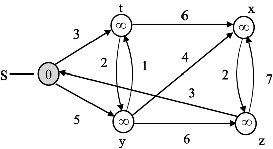
The Dijkstra’s algorithm for the above graph is as follows:
The shaded vertex has the minimum d value 0.
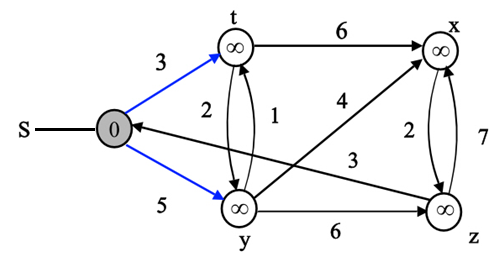
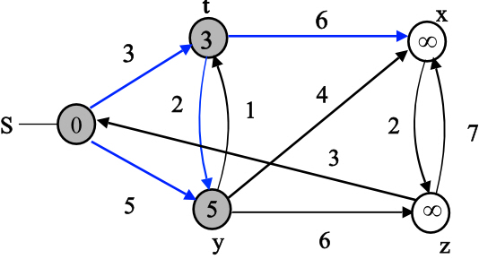
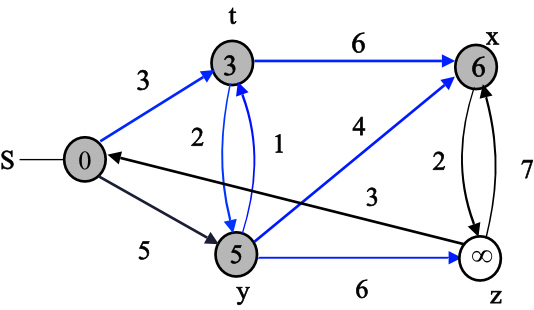
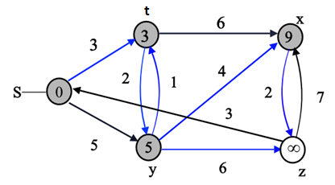
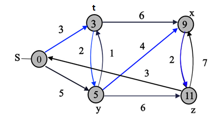
The final values of d and predecessor ( ) are shown
in the last diagram.
) are shown
in the last diagram.
Consider the vertex Z as the source vertex as shown below:
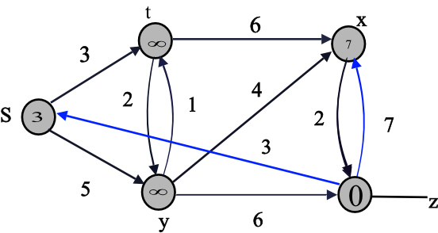
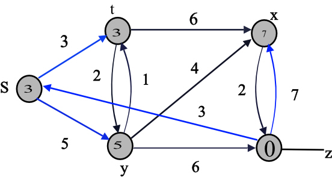
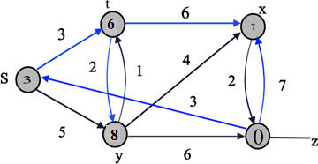
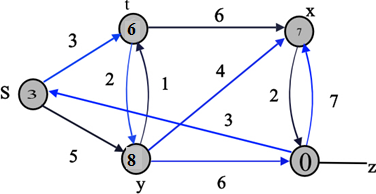
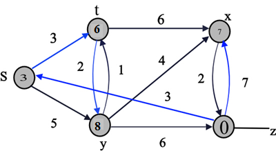
The final values of d and predecessor () are shown
in the last diagram.
Dijkstra’s Algorithm used to find the shortest path from vertex point to the destination vertex in a graph.
Dijkstra algorithm will not produce the correct result if in the graph G one or more than one edge contains the negative weight. It can be shown using an example.
Consider the following Graph G which is having negative edge weights. Working of Dijkstra algorithm run in the following steps for the below diagram:
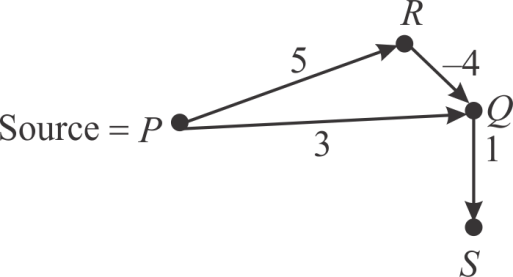
Consider the vertex source point P. De-queue the vertex P from the queue and the edge (P, R) and (P, Q) are relaxed. The changes are illustrated in the following diagram:
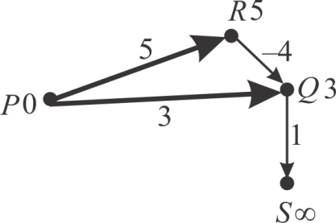
Now the vertex Q is on top of the min-heap queue. So de-queue the vertex Q from the queue and relax the only edge emerged out of Q (Q, S). It gives the distance 4 (3+1). The changes are illustrated in the following diagram:
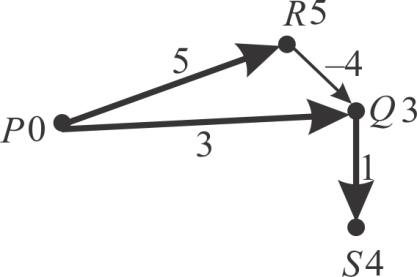
Now the vertex S is on the top of min-heap queue. De-queue the vertex S.
No edge goes out of the vertex S, so no edge is relaxed. Only one vertex R in the queue is left.
De-queue the vertex R and relax the (R, Q) edge. The distance will be 1(5-4). It is less than 3. So need to update it to 1 or write 1 for vertex Q instead of 3. The changes are illustrated in the following diagram:
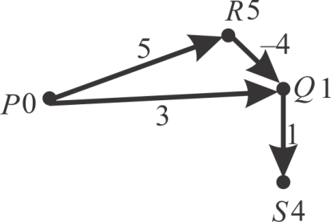
Now the algorithm will terminates as the queue is empty (all the vertices are traversed). The path form the source vertex P to destination vertex S is and it has the total weight of which is less than the other path which is 4.
Hence length of shortest path from the source point P to destination point S was not correctly evaluated.
Therefore, the Dijkstra’s algorithm produces incorrect answers if the weights are negative.
Dijkstra’s algorithm is a program which produces the distance of a node v from source and tells about its parent vertex for all the vertices of the graph.
The algorithm which takestime to
check the professor’s algorithm’s output and matches the values of
distance d and parent node of all
vertices for all non-negative edge weights.
of all
vertices for all non-negative edge weights.
Dijkstra’s algorithm is used to find the shortest path of all
the vertices of the weighted, directed graphs with direction from
the source vertex of the graph which is defined by the user.
Weighted graphs are those graphs in which each edge of the graph
has some positive weight value.
of the graph
has some positive weight value.
The topological sort is used to find the vertices in the linear order of consideration so first sort the given graph using topological sort and then relax the edges.
The correctness of the Professor Gaedel’s procedure would rely on checking the vertex weight v.d is equal to minimum of (s, u).
Algorithm:
// find the linear order of the vertices
Topologically sort the vertices of G
// initialize the distances and source of all the vertices
for each vertex
// set the distance of source vertex
// consider each vertex u in the graph
for each vertex u
// check for the adjacent vertices of the vertex u
for each vertex
if
The loop invariant present here in the line, “for each vertex” calculates the value for the vertex v from distance of the initial vertex. The program terminates successfully once all the edges are relaxed.
Thus the running time of the algorithm is and the algorithm calculates the values of and for each vertex of the graph.
Professor Newman analysis of Dijksrta’s algorithm
According to Professor Newman analysis, the dijksrta’s algorithm applies the relaxation on each edge of the shortest path of the graph in the order of their appearance and so the path relaxation property applies to each vertex which can be reached from the source.
Now proving that the professor is mistaken in the construction of the acyclic directed graph for which Dijkstra’s algorithm can check the edges for their weights in the shortest path out of order. It is used for the finding of shortest path of each node from the given source vertex in the directed acyclic graph G(V, E) in which with each edge there are fixed weight w(u, v) associated.
First we initialize all the vertices to their initial values then take the vertex with minimum distance. After that the present value of vertex weights is checked against the calculated values of the discovered edges, this step is called relaxation of edges.
Dijkstra's algorithm uses the greedy approach to select the vertices that are nearest to the source that is select the edge with minimum weight, if condition is true (the selected edge is nearest to the currently considered vertex).
This technique is basically referred to as relaxing of the edges.
Instead of performing the greedy approach, try to select the newly discovered edges, which algorithm would certainly not follow the norms of getting the valid result, since minimum weight path has nothing to do with the discovery of edges.
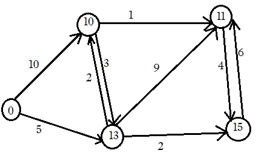
For the above graph, the professor Newman correctness algorithm and not getting the correct result because if, it just traverses the edge in the sequence, then discover the edges and if it is possible that it run out of the actual valid result.
Hence Professor Newman was mistaken by constructing a graph with directed edges for which the Dijkstra’s algorithm could relax the edges of a shortest path out of order.
The weight of the path can be calculated by the product of reliabilities of the edges that lie on the path.
The algorithm will resemble the DIJKSTRA algorithm and the run time will be the same but the target is to maximize weight.
Now, check the products instead of sum and switch the inequality as the target is to maximize reliability. Finally track path from y to x
Run the Dijkstra algorithm having edge weights w (x, y) = so that the shortest path can be detected from the source in O(E+VlogV) time complexity. The reliability of the path is the product of the reliabilities of the edges.
Thus, the Dijkstra algorithm is modified as:
if d[v]
d[v] = d[u]. w (u, v)
Run Dijkstra algorithm using w (u, v) =
The algorithm is as follows:
RELIABILITY (G, w, x, y)
1. INITIALIZE-SINGLE-SOURCE (G, x)
2. source = NULL
3. X = G.V
4. while X  NULL
do
NULL
do
5. u = EXTRACT-MIN(X)
6. source = source {u}
7. for each vertex do
8. if v[d]
9. v[d] = u[d]. w (u, v)
10.
11. end if
12. end for
13. end while
Thus, the time complexity b y using Dijkstra algorithm will be O(E+VlogV)
Consider graph, a weighted directed graph which has a non-negative weight function.
The positive value W and assume that two vertices cannot be on the same distance from the source vertex s.
Consider the other directed graph, which has no weights associated with its edges. This graph will replace with each edgewith unit weight edges in series.
Now finding the number of vertices in graph G’ and run the Breadth First Search algorithm on the graph G’. Proving that the vertices of the graph are painted black by the algorithm in the order in which the Dijksrta’s algorithm extracts the vertices from the QUEUE.
In the graph each edge with weight breakup into w edges with unit weight that is edge (u, v) replaced with an edge with weight w (u, v), and so more vertices are added to the V', new graph created.
So for total E edges in the graph, vertices are added.
By using formula of addition of arithmetic progression series:
Hence the graph G' contains vertices.
The Breadth First Search algorithm gives the shortest path from a vertex v in a graph to any other vertex of the graph. In this algorithm, each vertex can be colored using one of these colors: White, Gray and Black.
Dijkstra’s algorithm is used to find the shortest path of all the vertices of the weighted, directed graphs with direction from the source vertex of the graph which is defined by the user.
For finding the shortest path from source firstly it initializes all the nodes of the graph and then put them in a QUEUE and extracts one node at a time and calculates the distance for that node from source by relaxing the edge for the vertex.
Breadth first search and Dijkstra’s algorithm technique is the one where to continue with finding the edges whose parents have been discovered and then blackened.
In breadth fist search on graph G', the vertices in V will be blackened first since the V' vertices will be connected to V vertices and thus V' vertices would come later to V vertices.
This means that in a breadth first search we will proceed by blackening first V vertices and then would go further to the connected vertices of V which would be V'.
Hence on the graph G’ breadth first search algorithm will follow the same order to color its vertices with black color that is followed by the Dijkstra’s algorithm for extracting the vertices from the QUEUE.
The Dijkstra algorithm can be modified to compute the shortest paths from source vertex in time.
The priority queue is used to implement this. Implement the
min-priority queue so that for any sequence, insert and
extract min operation takes time
because for each item inserted in the array A[i] the time taken is
 and
decrease key operations take time where
keys are integers in range 0 to VW and key values are increasing
over time. Since the keys are in the range .
and
decrease key operations take time where
keys are integers in range 0 to VW and key values are increasing
over time. Since the keys are in the range .
Thus, the requirement is to compute the distance between the vertices which are connected by the edge of weight W.
The algorithm spends time in
while loop over all iterations of the for loop. Each adjacency list
is looked once. There are |V| insert, |V| extract min and at most
|E| decrease-key operations. All other operations take time so
total running time of the algorithm is:
Dijkstra’s algorithm:
For a weighted directed graph G with non-negative weight functionis for some positive integer W and source node s.
Modify that algorithm so that it will take time to run
The Dijkstra’s algorithm works on the directed acyclic, weighted graph to find the shortest paths of the vertices from the source vertex. In this algorithm first we initialize all the vertices to their initial values which take time then take the vertex with minimum distance.
The EXTRACT-MIN called in Dijkstra’s algorithm selects the vertex with minimum weight value from the source vertex which is present in QUEUE and this operation also takestime because we have to scan all the nodes in the QUEUE.
The present value of vertex weights is checked against the
calculated values of the discovered edges, this step is called
relaxation of edges which takes time for all
its edges. The above Dijkstra’s algorithm takes time that
is .
.
The time complexity of the algorithm can be reduced to if we implement the binary min heap instead of priority queue.
Heap is a data structure which is used to store the elements in the order for each node either its parent value is less than or equal to its children (MIN-HEAP) or the parent value is greater than or equal to its children value (MAX-HEAP).
In the binary min heap the root node contains the minimum value and we have to extract it by using EXTRACT-MIN algorithm. EXTRACT-MIN algorithm first replace the root node with the last node of the heap and then remove the last node by contracting the size of the heap and then it maintains the heap property.
So in binary min heap each EXTRACT-MIN operation then takes timeas there are |V| such operations for each vertex of the graph.
The time to build the binary min-heap is. Each DECREASE-KEY operation takes time, and there are maximum such operations of DECRESE-KEY.
So, the total running time is, which is if all vertices are reachable from the source.
Hence if we implement the binary min heap in place of priority queue in the Dijkstra’s algorithm then it will take time to run.